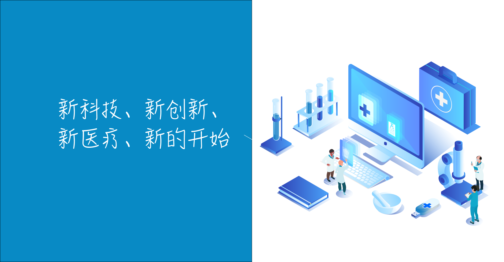
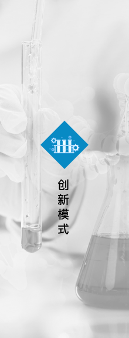
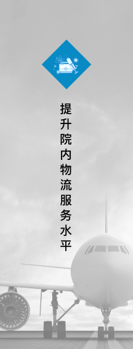
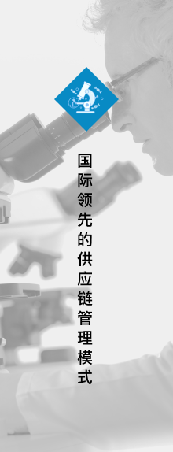
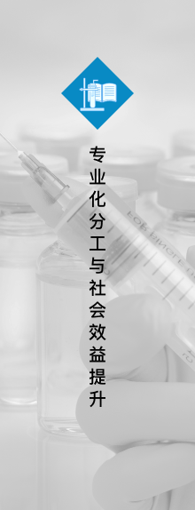

GPO医疗管理系统
利用信息化手段及医疗物联网技术，实现医用耗材供应商与医院之间，医院内部各使用及关联科室之间的协同高效管理。
供应（Supply）
以医院医疗物资管理部门为主导、以物联网信息技术为工具实现电子化的物流采购和供应。
加工（Processing）
通过整合繁杂的耗材类型以定数包和手术套包的方式进行加工，方便配送、使用和结算。
配送（Distribution）
通过物流团队的流程再造和实施工作，让医护人员回归本职工作，实现物资精细化管理。
GPO建设
GPO建设以JIT即时制生产、协同商务、业务重组、流程再造等经典生产管理理论为基础，借助现代ERP管理思想和手段，引入国外成熟的GPO建设成果，吸收GPO先锋知名医院建设经验，形成最佳实践，融入“互联网+”新思维、物联网、机器人等新技术，遵循科学和实证方法，创新发展扎实落地GPO建设。在保证医用耗材质量安全，保障科室消耗供给及时安全前提下，进行模式创新，提升医院物流管理形象和服务水平，打造国际领先的供应链物流管理模式，外部实现协同商务，院内物流实现专业化分工，实现医院、供应商利益共赢，被服务患者利益最大化，整体社会效益提升。





GPO服务
信德广源（北京）信息技术有限公司，作为国内领先的医用物资GPO管理服务提供商，技术支持服务体系在业界一直深受用户的肯定和好评。GPO管理与服务项目建设中，我司在现有服务体系的基础上，秉承“以客户满意为目标”的理念，提供专业的售后服务方案。

内容
信息管理系统软硬件
GPO耗材物流管理，耗材供应、配送
系统持续改进，提升业务效率
项目成果建设
内容
信息管理系统软硬件
GPO耗材物流管理，耗材供应、配送
系统持续改进，提升业务效率
项目成果建设
内容
信息管理系统软硬件
GPO耗材物流管理，耗材供应、配送
系统持续改进，提升业务效率
项目成果建设
GPO运营
遵循“解放医院相关部门人员（物流、仓储、护理部、科室），不占用医院人力物力，项目建设完全自主推动”的管理原则。确保项目安全高效的推进。
随着项目的不断推进，按照项目实施规划进度，遵循阶段性验收和总结，确保已上线实施的项目内容符合院方的管理需求；总结前期实施的工作经验，提出合理化的修改或者优化意见，确保已上线的项目能够平稳运行，待实施或者设计中的项目能够在原有的基础上再提高度，在符合医院的管理需求的基础上不断提升产品性能和服务质量。
基础资料准备
方案制作
其他工作
需求调研
组织启动
规划设计